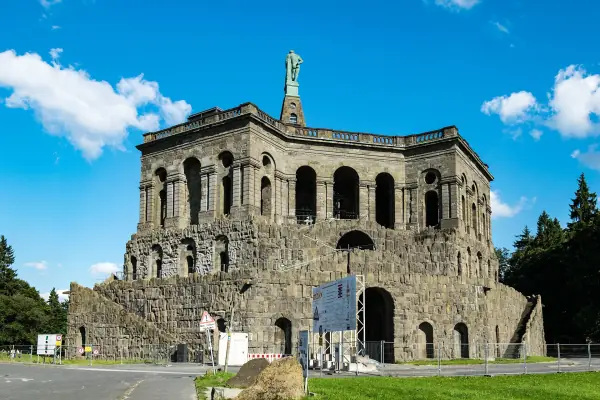

Start / Kassel-Steig
Aaron Schiele
geprüft am
geprüft am
Die zwölf Etappen auf einen Blick
Die Gehzeit ist eine Faustregel mit vier Kilometern in der Stunde, ohne Pausen. Auf den beiden anspruchsvollen Etappen am Habichtswald rechnest du mehr.
| Etappe | Von | Nach | Länge | Gehzeit etwa |
|---|---|---|---|---|
| 1 | Herkules | Bahnhof Ahnatal-Weimar | 15,0 km | 4 Stunden |
| 2 | Bahnhof Ahnatal-Weimar | Bahnhof Espenau-Mönchehof | 13,6 km | 3½ Stunden |
| 3 | Bahnhof Espenau-Mönchehof | Rothwesten Raiffeisenbank | 12,8 km | 3¼ Stunden |
| 4 | Rothwesten Raiffeisenbank | Landwehrhagen Rathaus | 12,1 km | 3 Stunden |
| 5 | Landwehrhagen Rathaus | Heiligenrode Wicherstraße | 11,5 km | 3 Stunden |
| 6 | Heiligenrode Wicherstraße | Oberkaufungen Mitte | 20,6 km | 5 Stunden |
| 7 | Oberkaufungen Mitte | Wellerode Kirche | 11,3 km | 3 Stunden |
| 8 | Wellerode Kirche | Dörnhagen Siedlung | 14,3 km | 3½ Stunden |
| 9 | Dörnhagen Siedlung | Bahnhof Großenritte | 16,0 km | 4 Stunden |
| 10 | Bahnhof Großenritte | Bahnhof Hoof | 12,5 km | 3 Stunden |
| 11 | Bahnhof Hoof | Brasselsberg, Haltestelle Blütenweg | 12,0 km | 3½ Stunden |
| 12 | Brasselsberg, Haltestelle Blütenweg | Herkules | 8,0 km | 2 Stunden |
So kommst du hin und zurück

Weil jede Etappe dort beginnt, wo die vorige endet, ist die Linie zurück nach Kassel auch die Linie für den Start der nächsten Etappe. Die Zahlen zeigen, wie viele Fahrten an einem Sonntag Richtung Kassel gehen, gezählt im Fahrplan vom November 2026. Werktags fahren die meisten Linien öfter.
| Haltestelle | Linie nach Kassel | Fahrten am Sonntag |
|---|---|---|
| Herkules | Bus 22 zum Druseltal, dort Tram 4 | 11 |
| Bahnhof Ahnatal-Weimar | RegioTram RT4 oder Regionalbahn RB4 | je 15 |
| Bahnhof Espenau-Mönchehof | RegioTram RT1 | 17 |
| Rothwesten Raiffeisenbank | Bus 40 | 17 |
| Landwehrhagen Rathaus | Bus 30 | 16 |
| Heiligenrode Wicherstraße | Bus 30, werktags auch Bus 32 | 16 |
| Oberkaufungen Mitte | Tram 4 | 31 |
| Wellerode Kirche | Bus 37 | 37 |
| Dörnhagen Siedlung | Bus 17 | 18 |
| Bahnhof Großenritte | Tram 5 | 37 |
| Bahnhof Hoof | sonntags Bus 53 zum Bahnhof Wilhelmshöhe, werktags Bus 52 | 17 |
| Brasselsberg, Blütenweg | Bus 51 oder 53 zum Bahnhof Wilhelmshöhe | 33 |
Start am Herkules

Die erste und die letzte Etappe beginnen und enden am Herkules. Hin kommst du mit der Tram 4 bis zur Endhaltestelle Druseltal und weiter mit dem Bus 22 bis zur Haltestelle Herkules am Besucherzentrum. Der Bus fährt auch im Winter, sonntags ungefähr von 10 bis 19 Uhr. Wer die letzte Etappe vom Brasselsberg aus geht, kann sie am Druseltal abkürzen: Nach gut zwei Kilometern führt ein Zuweg zur Haltestelle, von dort fährt die Tram 4 zurück in die Stadt.
Mehr zu Anreise und Parken am Herkules steht auf der Seite vom Bahnhof Wilhelmshöhe zum Herkules.
Welche Etappe für den Anfang?
Für den ersten Tag passt die Etappe 7 von Oberkaufungen nach Wellerode: rund elf Kilometer, leicht, und an beiden Enden fährt es oft, mit der Tram 4 hin und mit dem Bus 37 zurück. Etappe 12 ist die kürzeste, als mittel eingestuft, und endet am Herkules mit dem Blick über die Stadt. Die Etappen 1 und 11 am Habichtswald sind die anspruchsvollsten, mit mehreren hundert Höhenmetern. Etappe 6 ist mit über 20 Kilometern die längste.
Häufige Fragen
Kann man den Kassel-Steig ohne Auto wandern?
Ja. Alle zwölf Etappen beginnen und enden an Haltestellen von Tram, RegioTram oder Bus, die nach Kassel fahren. Am einfachsten sind die Etappen mit Tram oder RegioTram an beiden Enden, etwa Etappe 2 zwischen Weimar und Mönchehof.
Wie lang ist der Kassel-Steig?
Die zwölf Etappen sind zusammen rund 160 Kilometer lang. Die kürzeste hat 8 Kilometer, die längste 20,6 Kilometer.
Wo beginnt der Kassel-Steig?
Am Herkules im Bergpark Wilhelmshöhe. Dort endet er auch wieder, der Weg ist ein Rundweg.
Fahren die Busse auch am Sonntag?
Ja, an allen Etappenpunkten fährt sonntags mindestens eine Linie nach Kassel, meist etwa stündlich. Am Bahnhof Hoof fährt sonntags eine andere Linie als werktags.
Wer kümmert sich um den Kassel-Steig?
Der Hessisch-Waldeckische Gebirgsverein Kassel. Auf seiner Seite zum Kassel-Steig gibt es für jede Etappe eine Beschreibung und den Weg zum Herunterladen.
Quellen abgerufen am 05.11.2026
- Kassel-Steig Die Etappen (HWGV Kassel) · Impressum
- NVV Fahrplanauskunft Abfahrten je Haltestelle
- Stadt Kassel Anreise mit dem ÖPNV zum Bergpark
Weiterlesen
Habichtswaldsteig
Wandern im Habichtswald ab dem Bergpark Wilhelmshöhe: vier Rundtouren von 2 bis 18 Kilometern mit Start, Markierung und Rückweg per Bus 22 und Tram 4.
WeiterlesenHerkules Kassel
Herkules Kassel: Was das Monument ist, wann Oktogon und Plattform offen sind, was der Eintritt kostet und wie du mit Bus oder Auto hinaufkommst.
WeiterlesenBahnhof Wilhelmshöhe zum Herkules
Vom Bahnhof Kassel-Wilhelmshöhe mit Tram und Bus zum Herkules, Schloss und Bergpark: Linien, Fahrzeiten, Tickets und der Weg zurück am Abend.
Weiterlesen